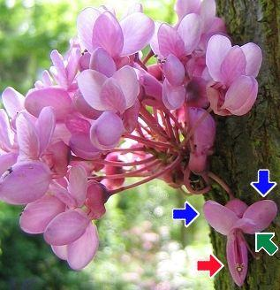

|
| Der Judasbaum blüht im Mai.
Die Blütenstände sind dichte Büschel. Sie wachsen an den Ästen oder am Stamm.
 | Die Blüten sind rosa gefärbt. Wir nennen sie Schmetterlingsblüten.
Jede Blüte hat 5 Kronblätter: Eine Fahne, zwei Flügel und ein Schiffchen aus 2 Blättern.
|